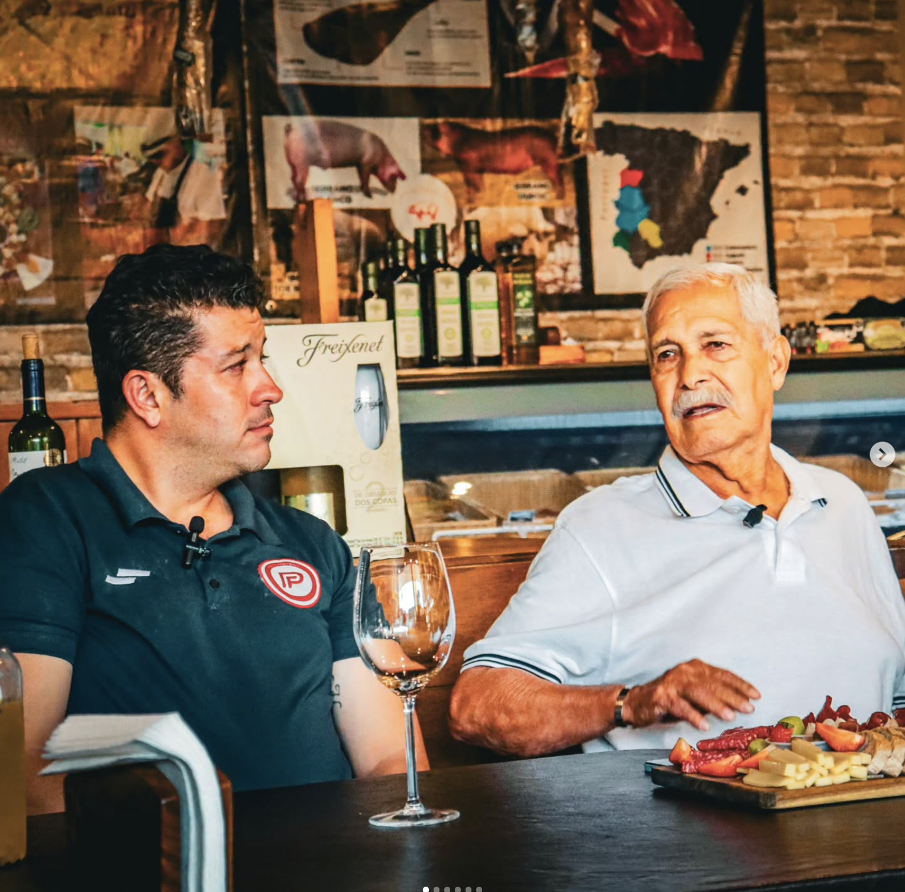
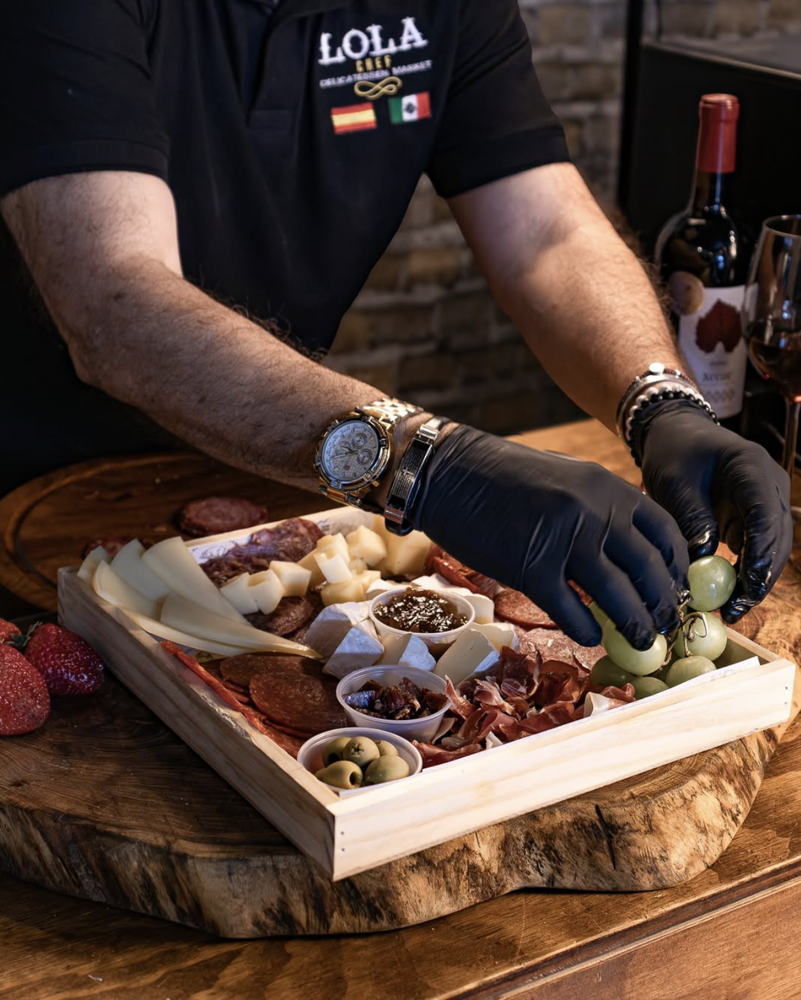

"Jamones ibéricos, cortes finos, carnes frías, pescados, mariscos y alimentos gourmet."


"Baguettes deliciosos... Calidad en los ingredientes, precios muy razonables. Ambiente relajado. ¡Vale la pena probarlo!"
"¡Un delicioso deli! Buena selección de vinos, carnes frías y la mejor charcutería española. Una joya en la zona real de Zapopan."
"La tabla de quesos y jamones estaba excelente, mucha calidad y tamaño. La atención fue muy buena y el local muy bonito."
Av. Sta. Margarita 4522-Local 6, Valle Real, 45136 Zapopan, Jal.